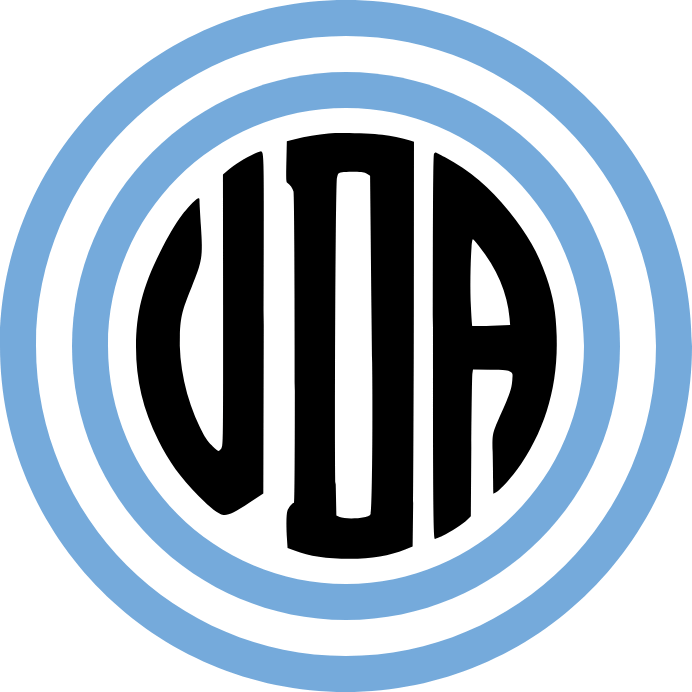

sobre mi:
¿Quien es VDA?
Probablemente te lo preguntaste, quizas no. Lo raro seria habertelo preguntado la verdad, pero bueno.
Nací en una fecha desconocida a inicios del año 2006, en una localidad del Conurbano Sur de Buenos Aires. Terminé mis estudios secundarios en el año 2023, y desde mitades del 2024 me encontraré cursando la carrera de Lic. en Comunicación Social.
En Octubre del 2023 inicie un canal de canciones de Doomerwave, basicamente, canciones remixeadas a ritmos mas lentos y con imperfecciones de fondo. Por alguna razón, muy probablemente para no copiarme de otros canales de musica de esta indole originarios de Argentina, bautizé este canal como "Video Doomer Argentina". Transcurrieron los meses, al canal le fue bien dentro de lo que esperaba, y queria abrir un canal para subir otro tipo de contenido, que originalmente se llamo VDArandom, justamente, las siglas del canal de musica. Posteriormente este canal jamas seria utilizado, y tras muchos años de espera queria iniciar con mi proyecto de creación de contenido.
Entonces, VDArandom fue rebautizado a simplemente VDA, le hice un rebranding orientado a los colores nacionales, todas mis plataformas cambiaron su usuario a "vda", "vdarg" o "vdaencualquiera".
Ah, y abri un canal en BitView. No es muy grande, pero es mi mejor obra hasta la fecha, y me encanta.